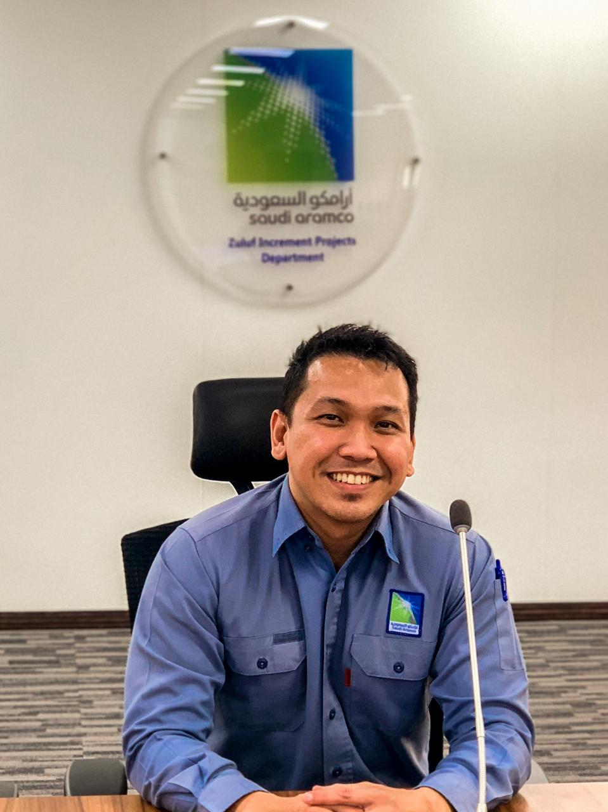

Front End Developer
HTML5, CSS3, JavaScript (ES6+), React.js, Bootstrap, Tailwind CSS, TypeScript, Git & GitHub & GraphQL API design
I currently work as a Project Secretary with a strong background in IT administration. In addition to my administrative responsibilities, I develop software solutions, create custom applications, and build automation tools that streamline processes and improve operational efficiency. My goal is to leverage technology to simplify complex tasks, enhance productivity, and support business success.

FIG. 01 — PORTRAIT SCALE 1:1// 01 — About
I am Christian Elli, an Secretary based in the Zuluf Projects under Downstream Pipelines, where I currently serve as a Project Secretary while supporting remote initiatives focused on Aramco Cybersecurity Compliance. My professional journey began as a Computer Technician, where I developed a strong technical foundation in hardware, software, and end-user support. Driven by a passion for technology and continuous improvement, I progressed into roles as a System Administrator and Network Administrator, gaining extensive experience in infrastructure management, network operations, and enterprise IT environments.
After moving abroad, I expanded my focus into Cybersecurity, recognizing the growing importance of compliance and security standards, particularly within the Saudi Aramco ecosystem. What initially began as a business requirement for working with Aramco vendors evolved into a professional specialization. Today, I actively contribute to the implementation of cybersecurity controls and compliance frameworks while helping organizations align with industry best practices. Alongside cybersecurity, I am advancing into the fields of Automation and Software Development. I have a strong interest in building practical solutions that improve productivity, eliminate repetitive tasks, and enhance operational efficiency. By combining technical expertise with administrative experience, I develop customized systems and automated workflows that support project management and document control activities. One of my unique strengths is the ability to bridge the gap between IT and project administration. As a Project Secretary, I leverage my technical background to create innovative solutions that streamline complex processes, manage large volumes of documentation, automate reporting, and efficiently handle demanding workloads. This hybrid skill set enables me to contribute value beyond traditional administrative functions and support both operational and technical objectives.
// 02 — Skills
HTML5, CSS3, JavaScript (ES6+), React.js, Bootstrap, Tailwind CSS, TypeScript, Git & GitHub & GraphQL API design
SQL Server, MySQL, PostgreSQL, SQLite
Manage Engine, Docker
Distributed systems, caching, event-driven architecture
Threat detection, security monitoring, risk assessment, Cybersecurity Governance & Compliance Security Audits and Compliance Monitoring, Endpoint Security Management, Security Awareness and Training, ISO 27001,
Active Directory Administration Microsoft 365 Administration Windows Server Administration User Access Management IT Asset Management System Troubleshooting and Technical Support Network Administration Backup and Recovery Management
Meeting scheduling and coordination Calendar management Document filing and records management Task prioritization Time management
Data entry and database management Travel arrangements Preparing minutes of meetings (MoM) Office correspondence Document control
Microsoft Word Microsoft Excel Microsoft PowerPoint Microsoft Outlook Microsoft Teams SharePoint and document management systems
Tracking project deadlines Follow-up on action items Preparing project reports Maintaining project documentation Coordinating with stakeholders
Workflow automation, AI-powered solutions, API Integration, digital transformation
// 03 — Experience
2025 — Present
A highly organized and detail-oriented Project Secretary with extensive experience providing administrative and project coordination support within Downstream Pipelines Projects. Skilled in managing project documentation, coordinating meetings, preparing reports and correspondence, tracking action items, and ensuring effective communication among project stakeholders. Demonstrated ability to maintain accurate records, support project teams in achieving key milestones, and ensure compliance with company procedures and document control requirements. Proficient in Microsoft Office applications, document management systems, and project administration processes. Recognized for excellent organizational skills, professionalism, confidentiality, and the ability to work efficiently in fast-paced, multicultural project environments while contributing to the successful delivery of project objectives.
2023 — 2025
Experienced IT Specialist with strong expertise in Systems Administration, Network Infrastructure, and Cybersecurity within the Oil & Gas industry, supporting operations under Saudi Aramco contractors. Proven track record in deploying, managing, and securing enterprise IT environments, including servers, network devices, end-user systems, and critical operational infrastructure. Skilled in implementing and maintaining cybersecurity controls in compliance with Saudi Aramco Cybersecurity Requirements (SACS-002), ensuring regulatory adherence, risk mitigation, and protection of critical business assets. Proficient in network security, system hardening, vulnerability management, endpoint protection, access control, backup and disaster recovery, and security monitoring. Experienced in coordinating cybersecurity assessments, compliance audits, remediation activities, and secure IT operations across project and corporate environments. Recognized for delivering reliable IT services, strengthening cybersecurity posture, and supporting business continuity while maintaining the highest standards of operational excellence, safety, and information security.
2021 — 2023
Provide administrative and technical support for restaurant branch operations by coordinating maintenance requests, monitoring system performance, maintaining records, and assisting branch staff with operational and technical issues. Ensure effective communication between branches, vendors, and management to support uninterrupted business operations.
2017 — 2021
Provide IT and administrative support to ensure the smooth operation of office systems, technology infrastructure, and daily business activities. Responsible for maintaining IT equipment, supporting users, managing records and reports, coordinating office operations, and assisting management with administrative tasks.
// 04 — Contact
I'm currently open to remote or physically for software development and cybersecurity. The fastest way to reach me is email — I usually reply within a day.
lagumbaychristianelli@gmail.com
Phone
+966 532763420
/in/christianelli
GitHub
@christianelli